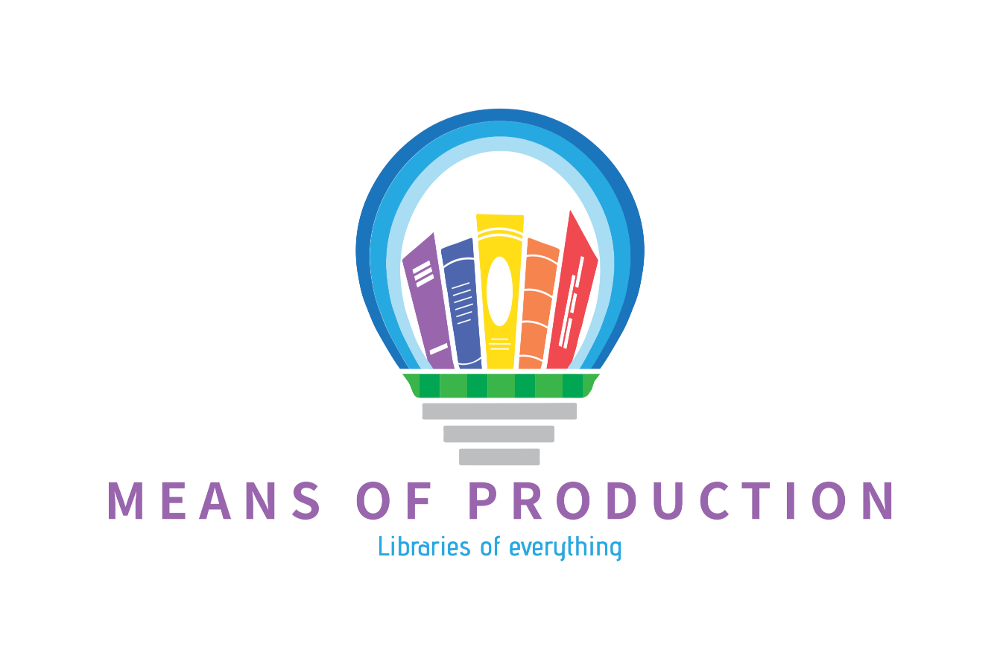

A free as in beer application to manage a distributed library, especially a library of things.
Because there's no need for every person to buy every tool
Because most library software isn't free, or assumes that the library owns the items always and can store them locally.
Because control of the means of production is the material basis for everything
Because distributed tool libraries may be easier to setup, and not require tools to live in a central place!
Because Library Socialism is a great idea - if you'd like to know more, check out srslywrong's series on this (https://srslywrong.com/podcast/189-library-socialism-usufruct/).
Borrowers - somebody who has a need and wishes to use an item to fulfill that need
Lenders - somebody with an item to lend.
Libraries - organizations which connect Borrowers and Lenders, and prevent abuses for the general good. Depending on the type of library, a library may also be a lender. Libraries create Loans of items, and also determine if Borrowers remain in good standing, if items are returned satisfactorily, etc.
something to be lent out. Can have a borrow cost, which reflects a relative worth of the item, to help even out lending if needed
A person or entity that owns an item. They might also be responsible for evaluating condition on return.
A person or entity which borrows an item through a Loan.
Borrowers who return items late or with damage can accrue either fees or demerits, depending on the library policies.
The temporary transfer of an item to a borrower to supply a need. Fills the Usufruct need - so a borrower might use and enjoy the benefits of an item, but is not free to destroy or permanently remove it (such as selling it).
Loans may or may not have an expiration. A gift or entitlement may be considered a loan without an expiration date.
A library might represent either a library organization, or a distributed group of Lenders
Libraries will also be able to long term allow members from other libraries, presenting an easy way to offer a unified platform for existing lenders
Libraries can enforce policies on behalf of their membership, such as maximum items to borrow at one time, fees or points for non-returned items, etc.
Long term integration with voting platforms for libraries is a good move to ensure democratic control of libraries.
Libraries can optionally take Donations, which transfers the location to a library.
Libraries create Loans of Items.
https://medium.com/@NiGhTTraX/making-typescript-monorepos-play-nice-with-other-tools-a8d197fdc680
The same people that do now. You are simply advertising that you're willing to lend the item to others. You can impose some conditions on the lenders - like, for example, they've proven their legal name, etc.
Yes, with the exception you'll need to wait till any current loans have been returned. You can then remove the item from borrowing.
Currently that's the risk being taken by the lender. Depending on the library, they likely will penalize the borrower to mark them as less trustworthy, and long term we'll be looking to create an insurance fund to partially compensate lenders and encourage more lending.
Nope. If you want to lend food, we advise making it a permanent loan, unless you're really into composting.
We ask for legal reasons you don't list anything you know to be illegal.
A permanent loan is where you don't want the item anymore, so you don't demand a return date.
No - per the principle of usufruct, it means the person can use and profit from the item, but not permanently stop others from using it.
In plain words, it means I give you the item, with the condition you don't sell it, instead giving it to someone else if you no longer want it.
Many local or free libraries exist. We should make it so not only can our software support their needs - but that we can offer an "all-library" view of items available anywhere a member has membership
For fees perhaps?
FairCoinThis will run over WireGuard VPN - we'll require 2 clusters. One is to provide the VPN to the public, and also act as the general admin (able to approve or revoke general VPN certs for who can join the cluster). The second uses the VPN provided by the first, and allows anyone to join their computer to a cluster to provide cloud resources and give a crowd sourced alternative to AWS and the like.